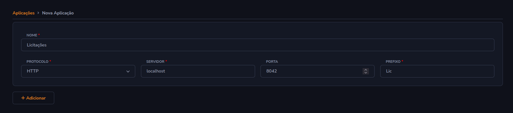
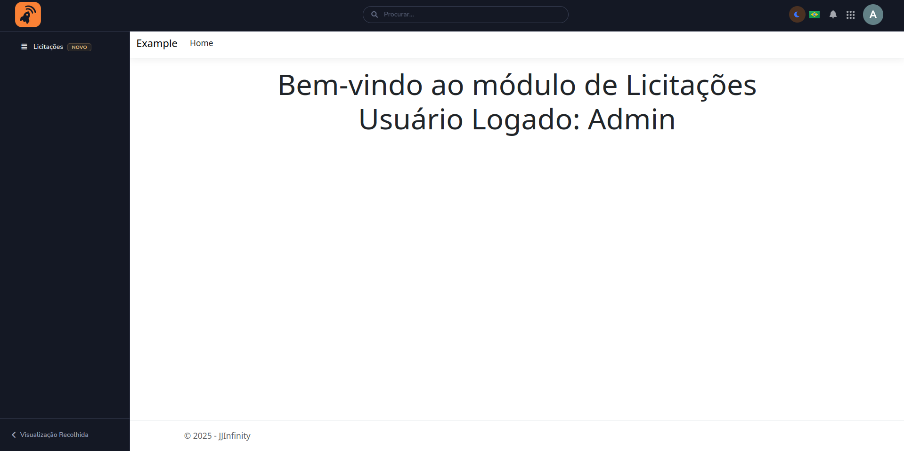

Aplicações
São serviços independentes que se comunicam com o Infinity por meio de um proxy reverso utilizando
o YARP (Yet Another Reverse Proxy).
Isso permite que sejam executadas de forma isolada, garantindo flexibilidade e escalabilidade, ao mesmo tempo que mantém
a integração transparente para os usuários.
Configurando uma aplicação
Crie sua aplicação no IIS, ela pode ser configurada no próprio localhost já que será protegida pelo proxy reverso.
Configure o JJInfinity e sua aplicação para ser possível autenticação via JWT, como no exemplo abaixo:
JJInfinity no arquivo
appsettings.json:{ "TokenOptions": { "SecretKey": "this is my custom Secret key for authentication", "ExpirationTimeSpan": "12:00:00" } }Sua aplicação (exemplo em ASP.NET Core):
var key = Encoding.ASCII.GetBytes("this is my custom Secret key for authentication"); //Recupere do appsettings.json de sua aplicação por exemplo. builder.Services.Configure<ForwardedHeadersOptions>(options => { options.ForwardedHeaders = ForwardedHeaders.XForwardedFor | ForwardedHeaders.XForwardedProto | ForwardedHeaders.XForwardedPrefix; }); builder.Services .AddAuthentication(options => options.DefaultScheme = JwtBearerDefaults.AuthenticationScheme) .AddJwtBearer(x => { x.TokenValidationParameters = new TokenValidationParameters { IssuerSigningKey = new SymmetricSecurityKey(key), ValidateIssuer = false, ValidateAudience = false }; }); app.UseForwardedHeaders(); app.UseAuthentication(); app.UseAuthorization();Configure no JJInfinity a configuração de acesso em Menu do Admin → Aplicações
Adicione no menu sua aplicação via URL Externa. Neste caso,
/Lic/Homeretornará esta página, por exemplo:

Menu Dinâmico
É possível retornar um menu dinâmico de sua aplicação.
Especificação da API
Endpoint: GET /Infinity/Menu
Content-Type: application/json
Descrição
Este endpoint deve retornar a estrutura completa de menu da aplicação. A resposta será um JSON contendo uma lista de itens, onde cada item pode ser de dois tipos:
url: representa um item de menu com um link direto.folder: representa uma pasta que pode conter outros itens de menu, sejam elesurloufolder.
A estrutura é hierárquica e pode conter múltiplos níveis de profundidade no caso das pastas aninhadas.
Abaixo, um exemplo do JSON esperado na resposta:
[
{
"type": "url",
"url": "/",
"slug": "home",
"id": "00000000-0000-0000-0000-000000000001",
"name": "Home",
"icon": 1,
"order": 0,
"newUntil": "2025-06-01T14:35:51.1467999Z"
},
{
"type": "folder",
"children": [
{
"type": "url",
"url": "/Home/Privacy",
"slug": "privacy",
"id": "00000000-0000-0000-0000-000000000003",
"name": "Privacidade",
"icon": 3,
"order": 0,
"newUntil": "2025-06-01T14:35:51.1468257Z"
}
],
"isGrouper": false,
"expandedByDefault": true,
"slug": "recursos",
"id": "00000000-0000-0000-0000-000000000002",
"name": "Recursos",
"icon": 2,
"order": 1,
"newUntil": "2025-06-01T14:35:51.1468023Z"
}
]
Observações
- A propriedade
"type"define qual classe ou estrutura deverá ser usada na leitura do item. Ou seja, "url" ou "folder". - A propriedade
"children"está presente apenas quando o item é do tipofolder. - O endpoint deve estar preparado para retornar esse JSON de forma dinâmica conforme a configuração do menu no sistema.
- A deve ser sempre uma URL relativa, ela será prefixada com a URL do Proxy em tempo de execução.
Estrutura de dados em C# (exemplo)
Abaixo um exemplo de como representar essa estrutura em C# utilizando System.Text.Json com suporte a desserialização
polimórfica. Qualquer outra linguagem também pode ser usada, desde que respeite o mesmo formato de JSON:
Models
using System.Text.Json.Serialization;
[JsonPolymorphic(TypeDiscriminatorPropertyName = "type")]
[JsonDerivedType(typeof(UrlMenuItem), "url")]
[JsonDerivedType(typeof(FolderMenuItem), "folder")]
public abstract class MenuItem
{
[JsonPropertyName("id")]
public Guid Id { get; set; }
[JsonPropertyName("name")]
public required string Name { get; set; }
[JsonPropertyName("icon")]
public int Icon { get; set; }
[JsonPropertyName("order")]
public int Order { get; set; }
[JsonPropertyName("newUntil")]
public DateTime? NewUntil { get; set; }
public List<string> Roles { get; set; } = [];
}
public class UrlMenuItem : MenuItem
{
[JsonPropertyName("url")]
public required string Url { get; set; }
[JsonPropertyName("slug")]
public required string Slug { get; set; }
[JsonPropertyName("isRedirect")]
public bool IsRedirect { get; set; }
}
public class FolderMenuItem : MenuItem
{
[JsonPropertyName("children")]
public List<MenuItem> Children { get; set; }
[JsonPropertyName("isGrouper")]
public bool IsGrouper { get; set; }
[JsonPropertyName("openAsPage")]
public bool OpenAsPage { get; set; }
[JsonPropertyName("expandedByDefault")]
public bool ExpandedByDefault { get; set; }
}
Endpoint
using ExampleApp.Web.Models;
using Microsoft.AspNetCore.Mvc;
namespace ExampleApp.Web.Controllers;
[ApiController]
public class InfinityMenuController : ControllerBase
{
[HttpGet("/Infinity/Menu")]
public JsonResult GetMenu()
{
var homeItemId = Guid.Parse("00000000-0000-0000-0000-000000000001");
var folderId = Guid.Parse("00000000-0000-0000-0000-000000000002");
var privacyItemId = Guid.Parse("00000000-0000-0000-0000-000000000003");
List<MenuItem> items =
[
new UrlMenuItem
{
Slug = "home",
Url = Url.Action("Index", "Home")!,
Id = homeItemId,
Name = "Home",
Icon = 1,
Order = 0
},
new FolderMenuItem
{
Id = folderId,
Name = "Recursos",
Icon = 2,
Order = 1,
IsGrouper = false,
ExpandedByDefault = true,
Children =
[
new UrlMenuItem
{
Slug = "privacy",
Url = Url.Action("Privacy", "Home")!,
Id = privacyItemId,
Name = "Privacidade",
Icon = 3,
Order = 0,
Roles = ["Admin"]
}
]
}
];
return new JsonResult(items);
}
}
Você pode adaptar essa estrutura a qualquer outra linguagem com suporte a herança e (de preferência) desserialização
baseada em discriminador de tipo (type).
O importante é garantir que o JSON siga exatamente o formato especificado para ser corretamente interpretado.
Em seu endpoint, retorne uma List<MenuItem>, caso retorne uma List<FolderMenuItem> ou List<UrlMenuItem> não será gerada a propriedade type causando erro na desserialização do JSON.
Caution
A URL /Infinity/Menu não requer autenticação, pois a requisição será realizada internamente pelo JJInfinity, e não
diretamente pelo navegador do usuário. Ainda assim, é fundamental que o site esteja hospedado em ambiente local (
localhost) ou na intranet, garantindo que essa rota não fique exposta ao público externo. Também é possível validar o JWT que enviamos caso ainda deseje hospedar fora de sua rede.